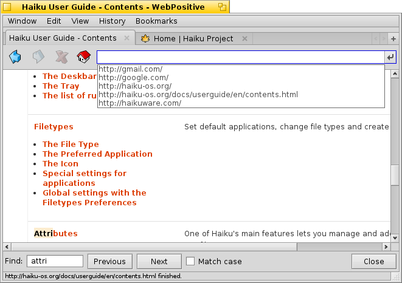
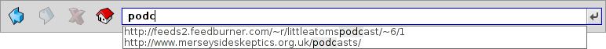

Українська
Українська Català
Català Deutsch
Deutsch English
English Español
Español Français
Français Italiano
Italiano Magyar
Magyar Polski
Polski Português
Português Português (Brazil)
Português (Brazil) Română
Română Slovenčina
Slovenčina Suomi
Suomi Svenska
Svenska 中文 ［中文］
中文 ［中文］ Русский
Русский 日本語
日本語 WebPositive
WebPositive
| Deskbar: | ||
| Розташування: | /boot/system/apps/WebPositive | |
| Налаштування: | ~/config/settings/WebPositive/ - конфігураційні файли, куки, кеш та історія перегляду | |
| ~/config/settings/WebPositive/Bookmarks - усі закладки у вигляді звичайних файлів |
WebPositive, або коротко Web+ це рідний вебпереглядач у Haiku. Частина назви взята від імені BeOS'ного NetPositive, а інша вказує на сучасну фундацію WebKit. Це відкритий вихідний код HTML бібліотеки рендеринга що є серцем таких мейнстрімових переглядачів тенет, як Safari від Mac OS X та Chrome від Google. Використовуючи WebKit, що постійно розвивається, Web+ буде в змозі йти в ногу з новими веб-технологіями.
 Інтерфейс WebPositive є досить простим: під панеллю меню ще одна з кнопками для переходу вперед або назад, кнопка зупинки завантаження сторінки та (опціонально) кнопка для переходу до домашньої сторінки.
Далі іде поле внесення URL адреси сайту.
Нижче цієї навігаційної панелі з'являються веб-сторінки. Ви можете відкрити багато сторінок паралельно із завантаженням кожної у свою власну вкладку.
У нижній частині вікна знаходиться рядок стану, що показує URL адресу сайта що завантажується або посилання на якому знаходиться курсор. При завантаженні сторінки індикатор рухається вправо.
 Налаштування (Settings)
Налаштування (Settings)
З меню Ви можете відкрити панель для виконання необхідних змін у WebPositive.

Перша вкладка виконує основні налаштування: перше вікно визначає якою буде , друге яка буде пошукова система, вікно куди зберігати матеріали стягнуті з інтернету.
Два випадаючі меню визначать що робити при відкриванні нового вікна або нової вкладки.
За допомогою наступних прапорців ви зможете не показувати панель вкладок, при одній відкритій вкладці. Інтерфейс WebPositive можна заставити ховатись при роботі у повноекранному режимі, а курсор мишки можна сховати на деякий час поки він нерухомий.
І, нарешті, ви можете прийняти рішення про включення кнопки "Домашня сторінка (Home)" у панелі навігації та встановити строк доки браузер пам'ятатиме посилання на сторінки сайтів з історії відвідувань.
На другій вкладці можна вибрати стандартні шрифти з зарубками (засічками), без зарубок (засічок) та моноширинний які будуть використовуватись та встановити їх типові розміри.
Остання вкладка використовується при налаштуванні проксі сервера.
Серфінг
Якщо ви раніше користувались будь-яким браузером, WebPositive не створить вам занадто багато сюрпризів. Замість того щоб пройтися кожним пунктом меню і функціями окремо, просто переглянемо деякі.

Нова вкладка буде створена при натисканні кнопки + на панелі вкладок або якщо ви знаходитесь деінде двокліком мишки на вільному місці там. Якщо відкрито більше вкладок ніж вписується у панелю активуються кнопки полоси прокручування < >, що дозволяє прокрутити її вліво або вправо. Кнопка ∨ у правому куті відкриває спливаюче меню для швидшої навігації.
Клікання по посиланню середньою кнопкою мишки відкриває сторінку в новій вкладці у фоновому режимі. Це ж при затисканні кнопки SHIFT відкриває її на пепедньому плані.
З меню ви можете або сторінку. Там же є опція , причому всі зображення залишаться оригінального розміру.
При перемиканні в повноекранний режим і активуванні приховування інтерфейсу він щезає за секунду, щоб тимчасово повернути інтерфейс досить пересунути курсор мишки до горішньої межі екрану.
- 
При введенні тексту в адресному полі браузер показуватиме відвідувані вами сторінки, у назві яких повністю чи частково присутні набрані символи, нижче цього поля. Ви можете або продовжувати додавати літери у текст, щоб скоротити список можливих місць, або вибрати запис з допомогою ↑ or ↓. Кнопка ENTER завантажить вибрану сторінку. Для цього також можна використати кнопку біля правої межі поля, крім того вона може перезавантажити вже обрану сторінку.
Рядки які не визнані як URL-адреси буде запропоновано переглянути у Google, збільшуючи тим самим швидкість пошуку. Правий двоклік дозволить відкрити контекстне меню яке в залежності від вибору об'єкта запропонує: відкрити посилання, нове вікно, нову вкладку, завантажити вибраний об'єкт ітд.
при старті пошуку на сторінці покаже поле для введення знизу. Знайдене буде виділено на сторінці.
Закладки (Bookmarks)
Закладки WebPositive обслуговуються як файли та теки у ~/config/settings/WebPositive/Закладки (Bookmarks)/. При додаванні закладки там просто створюється новий файл. Для швидкого відкриття теки скористайтесь пунктом .

Ви можете змінити URL-адресу закладки, ім'я, заголовок і ввести ключові слова, так само, як з будь-яким іншим файлом з атрибутами. Просто переконайтеся, що у Вас відображаються всі потрібні стовпці у меню вікна Tracker'а , тоді виберіть файл та натисніть ALT E для запуску редагування атрибута; змінити колонку атрибута можна за допомогою кнопки TAB.
Ви можете сортувати закладки в різні папки що ви створили власноруч.
Використовуючи Tracker для управління і навігації закладками ви отримаєте унікальні можливості, для швидкого пошуку потрібного.
Активуючи у налаштуваннях Tracker'а (Tracker's preferences), ви можете миттєво скоротити список своїх закладок згідно вашої стрічки-фільтра. Трохи збільшіть ↑ або ↓ вибір переміщення та натиснувши ENTER відкрийте сайт. Переконайтеся в тому, що відображені всі стовпці атрибутів, щоб мати змогу застосовувати фільтр до імені, заголовка, URL-адреси та ключович слів.
Для того щоб все працювало закладки повинні розміщуватись у теці ~/config/settings/WebPositive/Bookmarks/ і тільки копії можна розмістити у вибрані підтеки для використання в меню WebPositive'а (на загал). Крім того, заповнення атрибуту ключові слова насправді допомагає ...
Завантаження
відкриває вікно зі списком усіх колишніх та поточних завантажень:

Файли що завантажуються в даний момент відображаються зі зростаючим індикатором прогресу, це схоже на копіювання файлів в Tracker, інформацією про завантаження, розмір файлу і очікуваний час закінчення. Кнопки праворуч дозволять та завантаження або файл, або його запис зі списку. Кнопки внизу та зроблять це для всіх таких записів цього списку. Відсутні файли - це ті що були видалені в цей час.
Переміщення файлу, який в даний час завантажується в Кошик (Trash) зупинить завантаження. Ви також помітите, що його значок стає примарним (напівпрозорим).
Як правило, WebPositive надтерпеливий, коли мова йде про управління файлами з Tracker'а. Файли можуть бути перейменовані або переміщені навіть під час їх завантаження та навіть після того, як завантаження закінчене, ці зміни відображаються у вікні завантаження.
Вам ніколи не було цікаво, з якого сайту Ви завантажили якийсь конкретний пакет, зображення або інший файл? Ви зможете довідатись про цей шлях коли відкриєте файл у DiskProbe та подивитесь на його атрибут META:url.
Бажаєте щоб URL-адреса відображалася у теці завантажень? Просто скопіюйте туди закладку, маючи відкриту колонку атрибута закладки URL-адреси та видаліть закладку знову.
Гарячі клавіші клавіатури (Keyboard shortcuts)
Ось найбільш вживані гарячі клавіші клавіатури:
| ALT T | Відкрити нову вкладку. | |
| ALT W | Закрити поточну вкладку. | |
| ALT N | Відкрити нове вікно. | |
| SHIFT ALT W | Закрити поточне вікно. | |
| ALT ENTER | Увімкнути повноекранний режим. | |
| ALT R або F5 | Обновити поточну сторінку. | |
| ALT H | Відкрити домашню сторінку. | |
| ALT D | Показати/сховати вікно завантажень. | |
| ALT F | Показати поле пошуку при внутрішньосторінковому пошуку (сховати з ESC). | |
| ALT B | Закласти поточну сторінку. | |
| ALT M | Обслуговувати закладки, відкриття теки Закладки (Bookmarks). | |
| ALT ← | Попередня сторінка в історії. | |
| ALT → | Наступна сторінка в історії. |